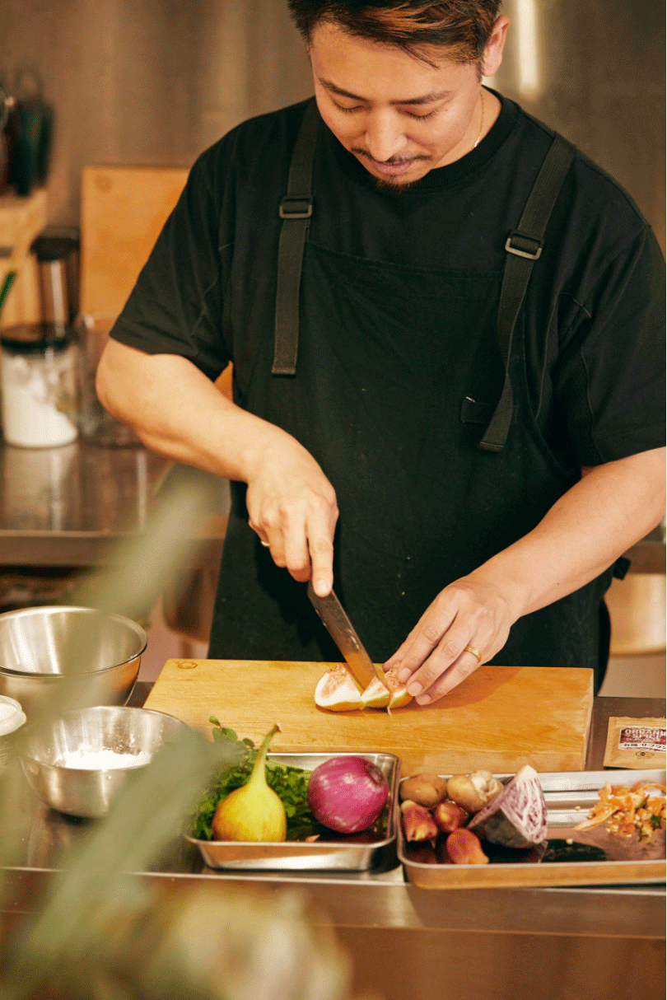
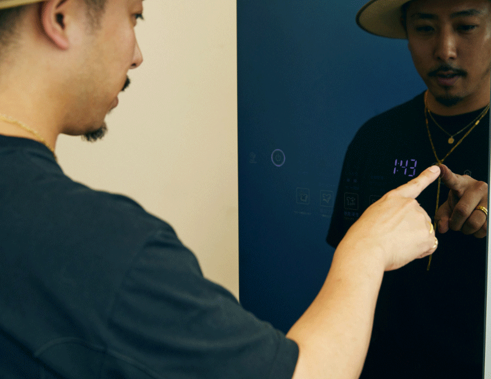

2022.08.10
SDGsが世界中で声高に掲げられる中、国内でも食に対する意識の変化が徐々に芽生えつつある。健康志向の高まりにより食材や料理にこだわる大人も増えてきた。とはいえ、美味しいご飯を食べた時に抱く幸福感は昔も今も変わらない。料理家、寺井幸也さんは、単に料理を提供、紹介、プロデュースするだけでなくそんな日常の掛け替えのない瞬間を演出する。その内に秘めた想いは、LG Stylerと共にある暮らしとも共鳴しうる素敵なマインドだ。
飲食店でのキッチン経験はゼロ、有資格者でもない。あるとするならば、和食やフレンチ、イタリアンなどジャンル問わず様々な場所で10年間サービスマンをしてきた経験のみである。それでもなお、彼の生み出す料理に、不思議と多くの人たちが吸い寄せられる。その背景には、納得しうる生まれもっての環境や経験があった。
「僕が生まれたのは鹿児島の小さな港町。小さい頃から美味しいというか、“良いもの”を日常的に食べてきました。料理も子供の時からしていましたよ。祖父が料理人で、よく一緒に船に乗り、魚を捕ったり、モリ突きをしたりしていましたね。中学校ぐらいには名前つきの包丁をもらったりもして。しかし、彼から教えてもらった記憶はさほどない。昔の人なので、見て覚えろというタイプの人でした。今考えると、その昔の経験は少なからず影響しているかもしれませんね」。
「僕が生まれたのは鹿児島の小さな港町。小さい頃から美味しいというか、“良いもの”を日常的に食べてきました。料理も子供の時からしていましたよ。祖父が料理人で、よく一緒に船に乗り、魚を捕ったり、モリ突きをしたりしていましたね。中学校ぐらいには名前つきの包丁をもらったりもして。しかし、彼から教えてもらった記憶はさほどない。昔の人なので、見て覚えろというタイプの人でした。今考えると、その昔の経験は少なからず影響しているかもしれませんね」。
音楽一家の元に生まれた子供が音楽の道を志すとも、スポーツ選手の子供が親と同じスポーツを目指すとも限らない。それと一緒で、当時はそこまで料理に深く興味をもっていなかったとか。ただ、25歳の時に上京したことがきっかけで状況は変わっていく。
「料理よりむしろ音楽にのめり込み、バンド活動をしながらアパレルも作ってみたいと朧げながら考えていました。それで、上京後にフォトグラファーやエディター、ライターといったファッション関係の方々と知り合い、ホームパーティーも頻繁にしていたんです。そこで作った料理を、幸也飯というハッシュタグを付けて彼らがSNSで発信してくれたんですよね。それがすごい反響で、だったらと料理の道を考えるようになりました」。
「料理よりむしろ音楽にのめり込み、バンド活動をしながらアパレルも作ってみたいと朧げながら考えていました。それで、上京後にフォトグラファーやエディター、ライターといったファッション関係の方々と知り合い、ホームパーティーも頻繁にしていたんです。そこで作った料理を、幸也飯というハッシュタグを付けて彼らがSNSで発信してくれたんですよね。それがすごい反響で、だったらと料理の道を考えるようになりました」。
自由気ままに始めたケータリング事業だったが、徐々にビジネスとしての輪郭が浮かび上がってきたことで本格的にスタート。仕事の幅を広げていくにつれ、徐々に高まったのは充実度やモチベーションだけでなく、食を提供する側の責任感だった。そこで、自分なりに大学へ話を聞きに足を運んだり、半年間、様々な九州の無農薬農家の元を訪れたりもした。素材への関心を強める中、寺井さんはある料理酒に出会う。
「こちらは、創業400年を数える老舗の料理酒。製法、水と、どれもがこれまで見てきたものとまったく違います。長い年月をかけて山から流れてくる水をベースに使い、一般的な本味醂の醸造期間よりも長く、約9ヶ月かけて仕込み、完熟醗酵させています。味噌、醤油、みりんといった、日本人がずっと食べ続けてきたものに関しては、正しい知識でもって自分に合うものを選んだ方がいいと僕は考えていて、実際にこちらの料理酒も交えて食べ比べ会もしました。もうその差は歴然ですね。以降、惚れ込んでしまいずっと使い続けています」。
それらを駆使し、これまで数多くの料理を作ってきた寺井さん。中でも“顔”というべき名物メニューがある。
それらを駆使し、これまで数多くの料理を作ってきた寺井さん。中でも“顔”というべき名物メニューがある。
「きっかけはタレントの紗栄子さんの誕生日。集英社の方に、お稲荷さん好きな彼女にサプライズをしたいけれどお稲荷さんは基本、茶色だから映えない。どうしたらいいですか？ と相談されたんです。それで、自分なりにアレンジを加えお出ししたらすごく喜んでもらえたんです。以前から、撮影時のお弁当はおにぎりが主流だったので何かないかと思案してはいました。そこで、差別化を図る意味でもお稲荷さんはいいかもと、以降、変更したところ好評で、雑誌内でも特集を組んでもらいましたね」。
お稲荷さんや唐揚げに目が引き寄せられがちだが、真骨頂はアイデア溢れる創作料理だ。今回作っていただいた料理もまた独自性に富む３品で、口に入れた瞬間に幸せを感じられる。
「お皿の手前に盛り付けたお肉料理は、豚の肩ロースのサフランロースソテー。カレーのスパイスにも使われるサフランの香りが食欲をそそるひと皿です。その右には、初夏にふさわしくいちじくを使用し胡麻和えを添えました。料亭などでよく見られる定番の和え物ですが、今回はカッテージチーズを入れ味をやや複雑にしていますね。その上はクレソンと紫タマネギの塩昆布マリネ。塩昆布の塩味がちょうどよくさっぱりとしたお味です」

「ファッションでも、洋服を見るだけでワードローブにある服との相性はなんとなく想像できるじゃないですか。それと一緒で、料理でも黄金比、いわゆる絶対的な組み合わせが自分の中でいくつもある。そこへ旬、食感、香りを組み合わせていくイメージですかね。そうすると、だいたいその時の一番美味しいひと皿ができあがる。それはもう子供の頃からいろいろ美味しいものを食べてきた積み重ねによるところが大きいですね」。
頭に思い描いたビジョンを具現化し、お皿のうえに描き切る。いたってアプローチとしてはシンプルだが、誰もがおいそれとできることではない。その中で寺井さんが特に大事にしているものがある。
頭に思い描いたビジョンを具現化し、お皿のうえに描き切る。いたってアプローチとしてはシンプルだが、誰もがおいそれとできることではない。その中で寺井さんが特に大事にしているものがある。
「やはり旬は大切だと思います。今は年中様々な食材がスーパーに並んでいますから見失いがちですよね。だからうちはいつも旬を感じられる素材をケータリングのメニューに取り入れています。だから皆さんも買い物をする時は、食材を補充する考えではなく、まずは旬の物を最初に買い物かごへ入れてみてください。きっとマンネリを防げますし料理も楽しくなりますよ」。
寺井さんは、店舗運営だけでなく、メディアを通して食や健康、美容などの情報も率先して発信している。そしてここ最近、そのベースとなる仕事場にLG Stylerを招き入れた。
「うちには猫がいるので、動物臭がどうしても服についてしまいます。迷惑をかけるほどではないと思いますが、中には気にされる方もいる。やっぱりLG Stylerがあると便利ですね。洋服以外であればエプロン。以前作った料理の残り香が付いている時もありますから、やはり気は遣いますよね。せっかく目の前の料理に香りづけを施しても、前の料理の匂いが付いてしまっては台無しなので」。
最近では、アパレルブランドを多数展開するアダストリアとコラボレーションしエプロンを作るなど、若い頃から好きだったファッションシーンとの関わりも増えている寺井さん。洋服へのこだわりもひとしおで、今や料理はもちろん彼の着こなしにも注目が集まっている。ただ、ここ数年の間に手にするアイテムにも変化があったとか。

「若い時は奇抜であれば奇抜であるほど良かったし、バンドマンだったんでやっぱりロックバンドからインスピレーションを受けることが多かったですよね。今は、地球環境やサスティナビリティをより深く考えるようになりましたし、それに伴い良いモノを長く着たいという視点から選ぶようになりました。となると、中にはケアが難しい素材も出てくる。結果、毎度クリーニング屋へ行く羽目になるのですが、LG Stylerがあれば素材に配慮しながら脱臭もしてくれるしシワも取ってくれる。本当、助かりますよね」。

料理を口に入れた瞬間とLG Stylerから取り出した服に袖を通す瞬間。双方のシーンに抱く感情に共感しながら、寺井さんは今日もまた多くの方々に幸せを届ける。


YouTube
1988年生まれ。鹿児島県出身。上京後、某有名レストランのサービスマンとして働く傍ら、メディア関係者の間で寺井さんが作るパーティー料理=“幸也飯”が話題に。2015年、改めて『幸也飯』としてケータリング事業をスタートさせ、多くのメディア媒体からオーダーが殺到。注目を集める。ほか、各企業の飲食店のプロデュースや商品開発にも携わり、レシピ本の執筆に加え、2019年には九州産のオーガニック野菜をデリバリーする「幸野菜」を展開。食の可能性を日々追求している。
Interview & Text: Ryo Kikuchi